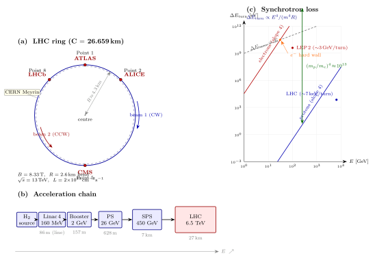

加速器的物理 — LHC 怎么造出 13 TeV 的对撞?
前二十节我们一直在写 Lagrangian、算 Feynman 图、做对称性分析, 公式一个接一个铺下去. 但如果暂停一下问: 这些公式是怎么被验证的? 答案每一次都落到同一个东西上 — 一台加速器, 把两束粒子怼到一起, 看从碰撞点飞出什么. 从第 12 节的 Higgs 到第 10 节的 CPT 检验, 从电弱混合角到 QCD 喷注, 所有这些精密测量背后都有一台机器在那儿嗡嗡响. 这一节我们不写新的对称群, 也不推新的积分, 就问一件工程师和理论家都关心的事: LHC 是怎么把两个质子加速到 $13\,\mathrm{TeV}$ 对撞的? 具体一点: 为什么环是 $27\,\mathrm{km}$? 磁铁要多强? 为什么不能用电子? 每秒能撞出多少 Higgs? 这些都是一阶估算能答的问题, 我们按顺序推一遍.
一、为什么要造这么大的环?
先摆实验事实. LHC 隧道是周长 $C=26.659\,\mathrm{km}$ 的圆环, 埋在 CERN 法瑞边境下 $50$–$175\,\mathrm{m}$ 深, 每个质子束的能量 $E=6.5\,\mathrm{TeV}$ (Run 2 指标, Run 3 升到 $6.8\,\mathrm{TeV}$), 两束对撞质心能量 $\sqrt s=13\,\mathrm{TeV}$. 四个大型实验点分布在环上: ATLAS, CMS (两个通用探测器, 第 22 节讲), LHCb (前向 B 物理), ALICE (重离子).
为什么环这么大? 最朴素的答案是: 磁铁弯不动了. 带电粒子在垂直磁场里走圆, 半径由 Lorentz 力给出. 相对论下, $p=\gamma m v$, Lorentz 力 $qvB$ 提供向心加速度 $v^2/R$ 乘 $\gamma m$ (相对论性质量), 解出 $$p=qBR,\qquad \text{即}\qquad R=\frac{p}{qB}. \tag{1}$$ 单位换算记一下: $p\,[\mathrm{GeV}/c]=0.2998\,B\,[\mathrm{T}]\,R\,[\mathrm{m}]$. 代入 LHC 数字, $p=6500\,\mathrm{GeV}/c$, 弯转区有效磁场 $B=8.33\,\mathrm{T}$, 需要的弯转半径 $R=6500/(0.2998\cdot 8.33)\approx 2603\,\mathrm{m}$. 环周长不等于 $2\pi R$, 因为实际加速器并非处处弯曲 — 直线段留给 RF 腔、聚焦、注入、探测器, 只有约 $2/3$ 的周长真正在弯. 于是总周长 $C\sim 2\pi R/(2/3)\sim 3\pi R\approx 24.5\,\mathrm{km}$, 和实际 $26.7\,\mathrm{km}$ 吻合到 $10\%$ (剩下差异来自束流冷却段、直线段的具体布置).
这就推出一对约束: 要把能量推到 TeV 级, 要么磁场更强, 要么半径更大. 常规电磁铁 $1\,\mathrm{T}$ 量级, 用它 $6.5\,\mathrm{TeV}$ 需要半径 $\sim 20\,\mathrm{km}$, 环 $\sim 200\,\mathrm{km}$ — 地理上不现实. LHC 选超导 NbTi 绕线 (临界温度 $T_c\approx 9.2\,\mathrm{K}$), 冷到 $1.9\,\mathrm{K}$ (用超流氦, 热导极高, 超 He II 的 λ 点在 $2.17\,\mathrm{K}$), 通 $11.85\,\mathrm{kA}$ 电流, 在束管位置给出 $8.33\,\mathrm{T}$. 这是今天工业 NbTi 接近极限的数字 ($B_{c2}^{\mathrm{NbTi}}(0)\approx 14.5\,\mathrm{T}$, 但工作点要留裕度, 且冷却与机械约束进一步压低). 下一代想冲 $100\,\mathrm{TeV}$ 的 FCC-hh 准备用 Nb$_3$Sn 推到 $16\,\mathrm{T}$, 同时把环扩到 $100\,\mathrm{km}$. 所以 LHC 的 $27\,\mathrm{km}$ 不是浪漫的选择, 是"已有隧道 (LEP 留下的) + 当代超导技术"的最优解.
二、deepdive: 为什么是质子, 不是电子?
现在做本节的 cliché 推导. 人人都会背"LHC 用质子因为电子同步辐射太大", 但背不等于推. 这里把 Liénard 的经典公式从头走一遍, 算出电子与质子损耗之比的精确次方, 看清楚为什么这个 $10^{13}$ 的差距是硬约束.
Liénard 公式. 从 Lagrangian 电动力学出发, 一个加速度为 $a$ 的相对论性带电粒子, 在瞬时共动参考系里辐射功率是 Larmor 的 $P=q^2 a^2/(6\pi\varepsilon_0 c^3)$. Lorentz 变换到实验室系 (相对论不变量: $P=-\tfrac{dE}{d\tau}$ 在 $\tau$ 为固有时), 并把加速度分解为纵向 $a_\parallel$ 与横向 $a_\perp$, 得 $$P=\frac{q^2}{6\pi\varepsilon_0 c^3}\gamma^6\Big[a_\parallel^2+\gamma^2 a_\perp^2/\gamma^2\Big]=\frac{q^2}{6\pi\varepsilon_0 c^3}\gamma^6\Big[a_\parallel^2+\gamma^{-2}\cdot\gamma^2 a_\perp^2\Big],$$ 写清楚一点: 纵向加速 (直线加速器) 效率 $\gamma^6 a_\parallel^2$, 横向加速 (圆环弯转) 效率 $\gamma^4 a_\perp^2$ — 其实圆周运动下的 Liénard 公式更干净: $$P_{\mathrm{rad}}=\frac{q^2 c}{6\pi\varepsilon_0}\,\frac{\gamma^4}{R^2}. $$ 高能 $\gamma\gg 1$ 下, 因子 $\gamma^4$ 全部来自横向加速度. 现在代入 $\gamma=E/(mc^2)$: $$P_{\mathrm{rad}}=\frac{q^2 c}{6\pi\varepsilon_0}\frac{E^4}{m^4 c^8 R^2}\propto \frac{E^4}{m^4 R^2}. \tag{2}$$ 这就是广为流传的 "$E^4/m^4$" 依赖. 单转能量损耗 $\Delta E_{\mathrm{turn}}=P_{\mathrm{rad}}\cdot T_{\mathrm{turn}}$, 其中 $T_{\mathrm{turn}}\approx 2\pi R/c$ (高能下粒子几乎光速, 误差 $\sim 1/\gamma^2$). 把 $P_{\mathrm{rad}}$ 代入, 化简: $$\Delta E_{\mathrm{turn}}=\frac{q^2}{3\varepsilon_0}\frac{\gamma^4}{R}\cdot\frac{1}{(4\pi)}\cdot(\text{数值})\;=\;\frac{q^2}{3\varepsilon_0}\frac{E^4}{m^4 c^8 R}\cdot \text{const}.$$ 对电子, 代入 $e,\,m_e c^2=0.511\,\mathrm{MeV}$, 公式化为工程师版本 $$\Delta E_{\mathrm{turn}}^{(e)}\,[\mathrm{keV}]=88.5\,\frac{E^4\,[\mathrm{GeV}^4]}{R\,[\mathrm{m}]}.$$ LEP 2 (同一个隧道, $R\approx 2600\,\mathrm{m}$, $E=104\,\mathrm{GeV}$): $\Delta E=88.5\cdot 104^4/2600\approx 3.98\,\mathrm{GeV}$ 每圈. 这已经近乎电子本身能量的 $4\%$ — LEP 每秒要向 RF 腔注入这么多能量才能维持束流, 并且这就是 LEP 在 $\sqrt s\approx 209\,\mathrm{GeV}$ 处戛然而止的原因 (再往上推, RF 功率成本爆炸).
质子的情况. 换成质子, $m_p c^2=938.3\,\mathrm{MeV}$, 相对电子 $m_p/m_e=1836.15$. 公式里的 $m^4$ 给出损耗压低因子 $$\frac{\Delta E_{\mathrm{turn}}^{(p)}}{\Delta E_{\mathrm{turn}}^{(e)}}\bigg|_{E,R\text{ 同}}=\Big(\frac{m_e}{m_p}\Big)^4=\Big(\frac{1}{1836.15}\Big)^4\approx 8.8\times 10^{-14}.$$ 即 LHC 的 $6.5\,\mathrm{TeV}$ 质子, 若我们问"同能量同半径下的电子同步辐射是多少倍", 因子是 $1/(8.8\times 10^{-14})\approx 1.1\times 10^{13}$. 这是一个十三个数量级的压制. 代具体数字: LHC 每质子单转同步辐射损耗约 $\Delta E_{\mathrm{turn}}^{(p)}\approx 6.7\,\mathrm{keV}$ (相对能量 $6.5\,\mathrm{TeV}$ 只占 $\sim 10^{-9}$), 可忽略. 如果同样的隧道装电子加到同样能量 $6.5\,\mathrm{TeV}$, 单转损耗会是 $\sim 6.7\,\mathrm{keV}\cdot 1.1\times 10^{13}\approx 7\times 10^{13}\,\mathrm{keV}=7\times 10^7\,\mathrm{GeV}\approx 10^7\,\mathrm{TeV}$ — 比粒子能量本身大一万倍. 物理上意思是: 电子根本跑不完一圈, 瞬间把能量辐射掉, 回到低 $\gamma$. 圆环 TeV 电子对撞机根本不可能.
为什么是 $m^4$ 而不是 $m^2$? 这里值得多看一眼. 公式 (2) 中 $\gamma^4=(E/m)^4$ 给出 $1/m^4$. 物理原因: 加速度 $a=v^2/R\approx c^2/R$ 本身与 $m$ 无关 (同样的弯转半径同样的速度), 但 Liénard 的 $\gamma^4$ 因子来自相对论下辐射场 $E_{\mathrm{rad}}\propto \gamma^2$ 与辐射立体角 $\Delta\Omega\propto 1/\gamma^2$, 功率 $\propto E_{\mathrm{rad}}^2\cdot\Delta\Omega\cdot\gamma^2\propto \gamma^4$. 换算到定能量下, $\gamma=E/mc^2$, 就给 $m^{-4}$. 再一层直觉: 辐射事件的单光子能量 $\hbar\omega_c\propto \gamma^3/R$, 单位时间光子数 $\propto \gamma/R$, 功率是两者之积, 给出 $\gamma^4/R^2$ 的组合. 这不是随便的指数, 它把加速器物理硬性地限制在"轻粒子环不能做 TeV"的角落.
这就逼出选择. 要 TeV 级, 两条路: (a) 用质子 (或离子), 接受同步辐射几乎为零, 代价是质子是复合粒子 (夸克胶子组成), 每次对撞的初态不确定, 截面上要对 parton distribution function 积分, 有效碰撞能量只有 $\sqrt s$ 的一小部分; (b) 用电子, 但改成直线加速器 (linear collider), 让粒子只加速一次不弯 (纵向加速项在 Liénard 里几乎为零, 因为 $a_\parallel$ 即使存在, 前置因子小得多). 例如 SLC ($3\,\mathrm{km}$ 线性, $50\,\mathrm{GeV}\times 2$) 和计划中的 ILC ($31\,\mathrm{km}$, $250\,\mathrm{GeV}\times 2$). LHC 选 (a) 因为 CERN 的隧道已经在那, 成本和工期最低. 这就是 "LEP 换成 LHC 因为同步辐射" 的严格论证.
三、RF 腔、同步条件、束团结构
光会弯还不够, 粒子还得被加速. LHC 的加速靠 $16$ 个 $400.79\,\mathrm{MHz}$ 的超导 RF 腔 (Nb on Cu, 冷到 $4.5\,\mathrm{K}$), 每圈给每个质子注入约 $485\,\mathrm{keV}$ (远多于 $6.7\,\mathrm{keV}$ 的同步辐射损耗, 其余用于注入时从 $450\,\mathrm{GeV}$ 推到 $6.5\,\mathrm{TeV}$ 的功率). 原理是同步加速器最古老的把戏: 一个沿环分布的振荡电场, 只有在粒子通过腔时电场恰好为加速相位. 粒子每圈到达腔的相位差为零, 需要满足同步条件 $$\omega_{\mathrm{RF}}=h\,\omega_{\mathrm{rev}},\qquad \omega_{\mathrm{rev}}=\frac{v}{R}=\frac{qB}{\gamma m}.$$ $h$ 是"谐波数", LHC 的 $h=35640$. 关键一点是: $\omega_{\mathrm{rev}}$ 在粒子被加速的过程中变化 (特别是低能段 $\gamma\sim 1$ 时), 所以 $B$ 必须跟着变, 否则 $R$ 会偏. 这就是"同步加速器"的名字由来 (syn-chrotron): 磁场 $B$ 与粒子能量 $E$ (通过 $\gamma$) 同步提升, 保持 $R=p/(qB)$ 恒定. 高能段 $v\to c$, $\omega_{\mathrm{rev}}$ 不变, 只需调频. LHC 的 $B$ 在注入时 $0.54\,\mathrm{T}$ ($450\,\mathrm{GeV}$), 爬升到 $8.33\,\mathrm{T}$ ($7\,\mathrm{TeV}$) 大约用 $20$ 分钟; 这个爬升速率 (几 mT/s) 是超导磁铁 eddy-current 损耗允许的极限.
束团结构. 质子不是连续流, 是离散的"束团" (bunch). 同步加速器的相空间是离散的 — 满足同步条件的相位周围, 非同步粒子会振荡 (synchrotron oscillation), 束流自然在 RF 相位周围聚集, 形成长度 $\sim 7.5\,\mathrm{cm}$ 的雪茄状束团 (在对撞点处压缩到横向 $\sim 17\,\mu\mathrm{m}$). 每个 LHC 束团载 $1.15\times 10^{11}$ 质子, 每束里排 $2808$ 个束团, 间距 $25\,\mathrm{ns}$ (对应 $7.5\,\mathrm{m}$, 因为 $c\cdot 25\,\mathrm{ns}\approx 7.5\,\mathrm{m}$). 双束相向对撞, 在四个交叉点每 $25\,\mathrm{ns}$ 发生一次 bunch crossing, 即 $40\,\mathrm{MHz}$ 的事件率. 粒子总数 $1.15\times 10^{11}\times 2808\approx 3\times 10^{14}$, 总束流能量 $3\times 10^{14}\times 6.5\,\mathrm{TeV}\approx 3\times 10^8\,\mathrm{J}=300\,\mathrm{MJ}$ — 相当于 $70\,\mathrm{kg}$ TNT, 跑一列 $150\,\mathrm{km/h}$ 的货运列车的动能. 为什么强调这个: 束流失控时, 这些能量会在 $\mu s$ 级时间内倾泻到磁铁或束管上; LHC 有一套 "beam dump" 系统, 每次注入前把整束 $3\,\mu s$ 内吸出到一块 $7\,\mathrm{m}$ 长的石墨靶上 (本身冷却系统是设计指标). 2008 年调试时一次超导电连接焊接不良导致的失超 (quench) 就释放了几十兆焦, 炸坏了若干段磁铁, 项目停了十四个月.
四、Luminosity 与 Higgs 率, 加速链, 历史
Luminosity. 对撞事件的率不光看碰撞能量, 还看碰撞频率与束团密度. 设两束每秒碰撞 $f$ 次, 每次每束 $N$ 个粒子, 横向重叠面积 $A$, 则单位时间单位截面的事件数 $$L=\frac{f\,N^2}{A}. \tag{3}$$ 这就是 luminosity, 量纲 $\mathrm{cm}^{-2}\mathrm{s}^{-1}$. 对撞点处 $\sigma_x\sigma_y\approx (17\,\mu\mathrm{m})^2\pi\approx 10^{-5}\,\mathrm{cm}^2$ (高斯重叠的有效面积), $N=1.15\times 10^{11}$, $f=40\,\mathrm{MHz}\cdot n_b/(\text{填充因子})$, 代进去 $L\approx 2\times 10^{34}\,\mathrm{cm}^{-2}\mathrm{s}^{-1}$ (设计值, Run 3 已超 $2.5$). 截面 $\sigma$ 单位是 $\mathrm{cm}^2$, 粒子物理里常用 barn, $1\,\mathrm{b}=10^{-24}\,\mathrm{cm}^2$; Higgs 产生主通道 gluon fusion $gg\to H$ 在 $\sqrt s=13\,\mathrm{TeV}$ 为 $\sigma\approx 50\,\mathrm{pb}=50\times 10^{-36}\,\mathrm{cm}^2$. 单位时间 Higgs 产生率 $$\dot N_H=L\sigma\approx 2\times 10^{34}\times 5\times 10^{-35}=1\,\mathrm{s}^{-1}.$$ 约一秒一个 Higgs. 若只看纯净道如 $H\to\gamma\gamma$ (分支比 $\approx 0.23\%$) 并乘上探测器接受度 ($\sim 50\%$), 可观测的 diphoton Higgs 事件只剩 $\sim 10^{-3}\,\mathrm{s}^{-1}$, 即一天几百个. 积分 luminosity $\int L\,dt$ 在 LHC 一年物理运行期间约 $150\,\mathrm{fb}^{-1}$ ($1\,\mathrm{fb}^{-1}=10^{-39}\,\mathrm{cm}^{-2}$), 对应总 Higgs $\sim 150\times 50\times 10^3\approx 8\times 10^6$ 个; 这是为什么 $2012$ 年 ATLAS 与 CMS 只用不到 $20\,\mathrm{fb}^{-1}$ 就能宣布发现 $m_H\approx 125\,\mathrm{GeV}$ 的共振峰 (并在 $H\to\gamma\gamma$ 和 $H\to ZZ^*\to 4\ell$ 两个通道同时 $\gt 5\sigma$, 下一节会讲 $5\sigma$ 为什么是 $5\sigma$).
加速链. 质子不是一上来就 $6.5\,\mathrm{TeV}$. LHC 是一条流水线的末端. 源头是一瓶氢气, 氢原子被剥掉电子得到裸质子, 经 $$\text{Linac 4 (160 MeV)}\to\text{Booster (2 GeV)}\to\text{PS (26 GeV)}\to\text{SPS (450 GeV)}\to\text{LHC (6.5 TeV)}$$ 五级接力. Linac 4 是直线, 用常温 Cu 腔; Booster 到 LHC 都是环, 磁铁一级比一级大一级比一级强. 为什么要分这么多级? 因为同步加速器只能在 $B$ 的动态范围里工作: 磁铁从最低到最高的比例受工艺约束 (LHC 磁铁从 $0.54\,\mathrm{T}$ 到 $8.33\,\mathrm{T}$, 比值 $\sim 15$), 不能从 $\mathrm{eV}$ 级注入直接推到 TeV. 所以每级的出口能量作为下级的入口能量, 逐步放大. 整个链从按下按钮到出束要 $\sim 20$ 分钟 (主要是 LHC 本身的爬升时间), 一次 "fill" 可持续 $10$ 小时.
历史. 加速器的故事是一部"想把环做得更大、磁铁做得更强"的工程史. 1929–1931 年, Ernest Lawrence 与 Stanley Livingston 在 Berkeley 造出第一台 cyclotron, 直径 $11\,\mathrm{cm}$, 把质子加速到 $80\,\mathrm{keV}$; Lawrence 1939 Nobel. Cyclotron 的频率 $\omega=qB/m$ 不含 $\gamma$, 非相对论下粒子每转一圈同步; 一到相对论 $\gamma\gt 1$, 频率漂移, cyclotron 失效. 1945 Veksler 与 McMillan 独立提出 "phase stability" (同步加速原理): 让 RF 频率随粒子能量同步变化, 破除相对论限制. 这就是 synchrotron. 从 1952 Brookhaven Cosmotron ($3\,\mathrm{GeV}$) 到 1959 CERN PS ($26\,\mathrm{GeV}$), 1972 Fermilab Main Ring ($500\,\mathrm{GeV}$), 每代都用"更大环 + 更强磁铁"把能标往上推. 真正的分水岭是 1983 Fermilab Tevatron 开机: $1\,\mathrm{TeV}$ 每束的 $p\bar p$ 对撞机, 首次用超导 NbTi 磁铁 ($4.4\,\mathrm{T}$), 让"循环 TeV"从纸面变成硬件; 1995 年在 Tevatron 上发现 top 夸克. 同一时期 CERN SPS 改造成 $Sp\bar pS$ ($540\,\mathrm{GeV}$), 1983 UA1 发现 $W,Z$. LEP 1989–2000 填了 $27\,\mathrm{km}$ 隧道做电子对撞 (同一条隧道, 后来拆了改 LHC), 精测电弱, 确认 $Z$ 有三代中微子. LHC 2008 年 9 月 10 日第一束粒子循环, 9 天后一次 quench 事故停机, 2009 重开, 2010 $\sqrt s=7\,\mathrm{TeV}$ 首对撞, 2012 升 $8\,\mathrm{TeV}$ 并发现 Higgs, 2015 升 $13\,\mathrm{TeV}$ (Run 2), 2022 起 Run 3 在 $13.6\,\mathrm{TeV}$. 从 Lawrence 的 $80\,\mathrm{keV}$ 桌面机器到 LHC 的 $13\,\mathrm{TeV}$ 二十七公里环, 能标提高了 $10^8$ 倍, 横跨了不到一个世纪. 对撞能标每十年提高约一个数量级的节奏叫 "Livingston plot", 一直维持到 LHC — 之后放缓了, 因为地理、工艺、成本三者同时走到了边际.

小结
LHC 的 $13\,\mathrm{TeV}$ 不是抽象数字, 它从三个具体约束挤出来: Lorentz 圆周 $R=p/(qB)$ 把环的大小与磁场绑在一起, $8.33\,\mathrm{T}$ 的 NbTi 超导磁铁给出 $2.6\,\mathrm{km}$ 弯转半径, 配上直线段凑成 $27\,\mathrm{km}$ 周长; Liénard 的 $P_{\mathrm{rad}}\propto E^4/(m^4 R^2)$ 让电子在同样环上同样能量的同步辐射比质子大 $(m_p/m_e)^4\approx 1.1\times 10^{13}$ 倍, 把 TeV 级电子圆环排除在工程可行集之外, 所以只能是强子机器; luminosity $L\approx 2\times 10^{34}\,\mathrm{cm}^{-2}\mathrm{s}^{-1}$ 乘以 gluon-fusion Higgs 截面 $\sigma\approx 50\,\mathrm{pb}$ 给出每秒约一个 Higgs, 一年 $\sim 10^7$ 个, 2012 年只需要 $20\,\mathrm{fb}^{-1}$ 就把 $m_H=125\,\mathrm{GeV}$ 从背景里拣出来. 2808 个束团每 $25\,\mathrm{ns}$ 对撞一次, 束流总动能 $300\,\mathrm{MJ}$ 的量级让 quench 保护变成工程必需. 从 Lawrence 1929 年 $11\,\mathrm{cm}$ 桌面 cyclotron 到 CERN 2008 年 $27\,\mathrm{km}$ 深隧道, 能标抬了八个数量级 — 但 Livingston plot 已经在 LHC 处开始走平, 下一台 $100\,\mathrm{TeV}$ 的 FCC-hh 若真要建, 需要 $16\,\mathrm{T}$ Nb$_3$Sn 磁铁和 $100\,\mathrm{km}$ 的隧道, 代价是上一代的 $10$ 倍. 机器是有极限的, 而公式告诉我们极限长什么样. 下一节我们走进探测器, 看这些从对撞点飞出的粒子怎么被测到.
▲